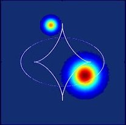
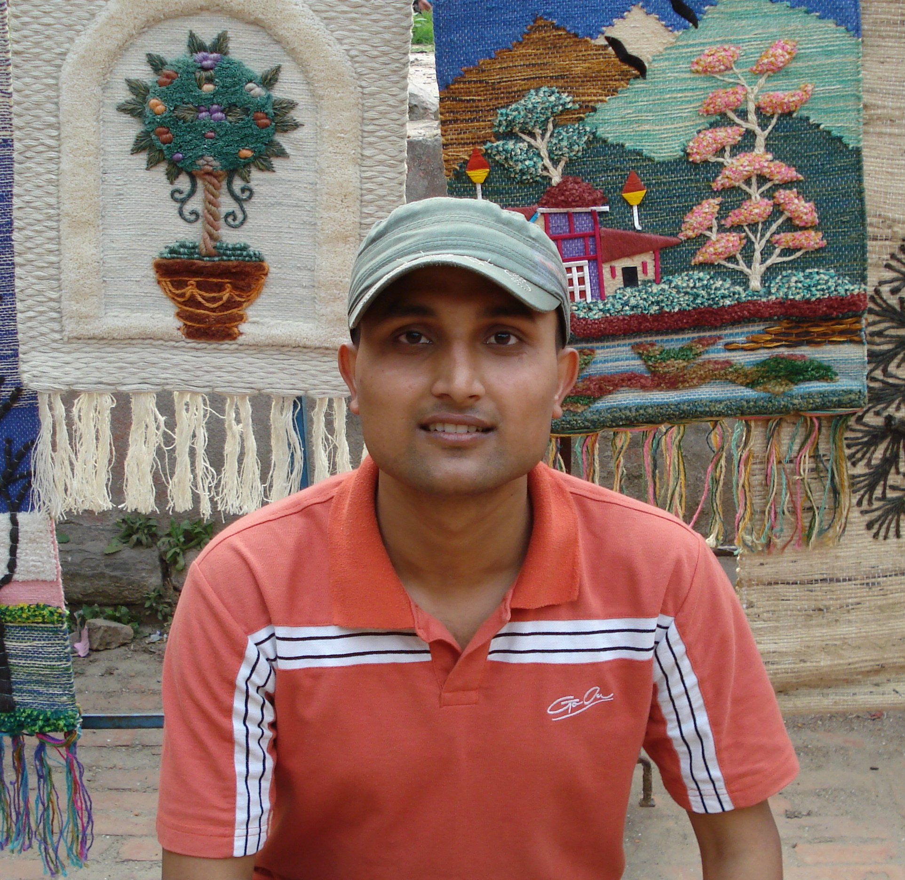
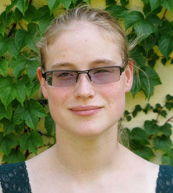
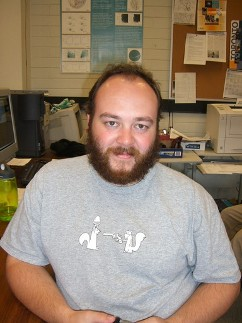

· Meet the GA team

· Research Activites

· Publications

· Ozlens 2008

· Join Us!
| Geraint
is
the head of the Gravitational Astrophysics Group at USyd.
When not asleep at the telescope, his research includes cosmology,
general relativity, gravitational lensing, galactic cannibalism and
basically anything else that interests him. + More Research Info + Home Page |
||
| Peter
is
working on numerical simulations of turbulent disk accretion
and magnetised outflows around black holes. These objects can produce
spectacular jets as well as X-ray and gamma-ray emission in the nuclei
of active galaxies and smaller-scale accreting sources such as X-ray
binaries. They are common in the universe but we have much to learn
about the physical processes that drive them. + Contact Details + Home Page |
||
| James
works on large-scale galaxy surveys, combining information from large
numbers of galaxies in order to better understand the processes that
drive their formation and evolution. He is particularly interested in
the relationship between active galactic nuclei and star formation. A
significant part of this work consists of developing new statistical
tools that allow us to make sense of the vast quantities of data
generated by modern surveys. + Contact Details |
 |
|
| Scott
is
a computational physicist currently involved in modelling the
effects of dark energy alongside Matt. Although there is thought to be
much more dark energy than dark or baryonic matter in the universe
there
is a poor understanding of how it might behave. Scott's other interests
include general relativity and quantum physics. + Contact Details |
||
| Brendan is studying galactic evolution
using Bayesian voodoo on the Pan-Andromeda Archaeological Survey
(PAndAS) data of M31 and M33. His interests cover all things General
Relativity, having just spent his honours year studying the effects of
Alcubierre Warp Drive on light and matter. + Contact Details |
||
| Holly
is studying the formation
of the large scale structure of the
universe. Currently, she is looking at how dark matter structure
influences the spins
of galaxies and using N-body simulations to do
cosmology. She is also interested in theories of gravity and dark
energy. Holly is a Sagittarius and out of all the fundamental forces,
her favorite is gravity. + Contact Details |
||
| Tom
is working on the growth of
supermassive black holes and their role
in galaxy evolution. His research involves the use of N-body
simulations to quantify the effectiveness of processes like dynamical
friction, three body
scattering and gravitational recoil at various
stages in the history of the universe. At present there is a multitude
of formation theories for these massive bodies which appear to lie at
the heart of all galaxies, however little distinction can be made due
to a lack of observable evidence. + Contact Details |
||
|  | Prajwal
is currently looking at the behaviour of the
stellar halo of our own the Milky Way Galaxy. He is trying to
constrain the formation history of the galaxy by the study of the
kinematics of the stellar halo. Whether the stellar halo is rotating or
counter-rotating is the one of the interesting ideas he is currently
checking. + Contact Details + Home Page |
|
| Foivos
is trying to understand a
bit more, what's this thing called
dark matter. His research focuses on the analysis of kinematics of
Dwarf spheroidal galaxies and globular clusters, through dynamical
theories and Bayesian statistics methods. He is also passionately and
incurably in love with advanced mathematics and his natural
environment: liquid space, and feels gratitude for he found plenty of
both in Sydney. + Contact Details |
||
| Anthony is a student at Macquarie University working with Geraint on data from the Pan-Andromeda Archaeological Survey (PAndAS). His PhD research is concerned with developing a robust, Bayesian algorithm capable of locating the tip of the red giant branch with consistant accuracy of better than 0.05 magnitudes. This is now up and running and in the process of being applied to the various substructures in the M31 halo in an effort to accurately obtain their distances. | ||
| Magda
is a PhD student, working
on the evolution of the Magellanic Clouds. In particular, she is trying
to re-build the genetic inheritance of the Clouds, in order to describe
how the past of these galaxies has influenced their interaction with
the Galaxy. + Contact Details |
||
|  |
Francesca is a PhD student investigating how gravitational lensing can be used to estimate the amount of dark matter in the universe. Her main interest is theoretical cosmology, ranging from the differential geometry of various spacetimes to properties of dark energy. She spent her Honours year getting her hands dirty with numerical simulations, using Markov Chain Monte Carlo methods to estimate the fractional matter and dark energy content of the universe and investigating non-ΛCDM dark energy models. Her present research focuses on gravitational microlensing for cosmological purposes. +Contact Details |
|
| Luke
Barnes is a postdoctoral researcher. He is working on the link between
Lyman alpha emission and the formation of cosmic structure. + Contact Details |
||
|  |
Nick Bate is a postdoctoral researcher. He currently works with Pan-Andromeda Archaeological Survey (PAndAS) data, and continues to be interested in gravitational microlensing of quasars. +Contact Details |
A couple of other people associated with our group:
Collaborators:. Miroslav Micic
· Madhura Killedar
· Richard Lane
· Juliana Kwan
· Hugh Gardsen
· Matt Francis
· Blair Conn
· Paul Lasky
Visitors:
- Matthias Redlich
- Edoardo
Carlesi